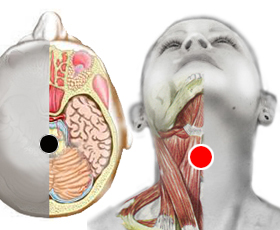

Alcoholismo
Pares
pineal - tiroides
pómulo (D) - tiroides
polo - polo

Generalidades:
Las adicción al acohol es un padecimiento de grandes proporciones a nivel mundial, sobre todo porque es una droga legalmente permitida. No por eso son menores los estragos que puede causar a nivel físico, emocional, mental y familiar. Como toda adicción el acoholismo es una enfermedad progresiva y mortal, si no se trata en forma profesional e integral.
Al alcohólico se define como la persona que tiene problemas por su forma de beber (alcohol), ya sea problemas personales, familiares, laborales, etc. Esto es sin importar que la persona beba ocasionalmente o en forma continua. El metabolismo del alcohólico no funciona igual que el de otras personas, por eso una vez que comienza a beber no puede dejar de hacerlo, cada vez con mayor cantidad y frecuencia a causa de la tolerancia que su cuerpo desarrolla a la sustancia. Es por eso que la única solución para un alcohólico es mantenerse en completa abstinencia (situación que él o incluso sus familiares difícilmente aceptan).
Los grupos de Alcohólicos Anónimos "AA" tienen presencia a nivel mundial. Brindan apoyo gratuito a todas aquellas personas que tengan un deseo de dejar de beber. Su programa está basado en la autoayuda y el apoyo espiritual, es el Programa de los 12 pasos.
Algunos rasgos del temperamento y personalidad del alcohólico se pueden tratar con biomagnetismo como es una tendencia psicótica o a padecer ansiedad. Al equilibrar el estado emocional hay mayores probabilidades de éxito para dejar de beber.
Al alcoholismo además de afectar a la persona que ingiere la bebida también causa trastornos psicológicos en las personas con las que convive como pueden ser familiares, amigos o compañeros de trabajo. Es por eso que también a ellos se les sugiere la asistencia a grupos de ayuda llamados Alanón.
Temas relacionados: